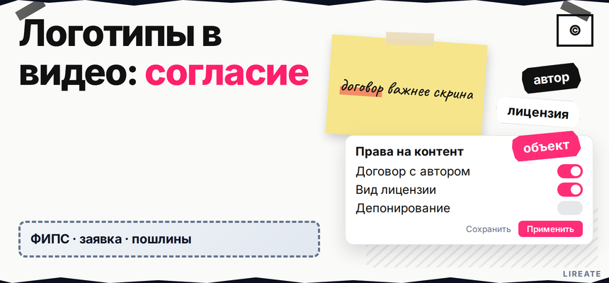

Вы готовите корпоративный ролик, обзор или кейс "нам доверяют", а на таймлайне уже лежат десятки чужих логотипов. Публикация без проверки - это не "красивый монтаж", а возможная претензия по ст. 1484 (товарный знак), ст. 1270 (графика логотипа) и правилам добросовестного контента. Ниже вы классифицируете ролик, пройдёте чек-лист по трём контурам, внесёте правки до рендера и поймёте, куда перейти при претензии. Материал на 13.11.2026 не заменяет консультацию поверенного.

TL;DR / Быстрый инсайт: Чужой логотип в видео проверяют по трём контурам: товарный знак (использование без согласия по ст. 1484), авторское право на файл знака (ст. 1270) и добросовестность (реклама vs обзор, ФЗ "О рекламе", ст. 14.3 ЗоК). Крупная вставка скачанного PNG в промо своих услуг - почти всегда зона согласия. Размытие и дисклеймер в описании согласие не заменяют. Превью и обложку ролика разбирают отдельно в гайде L17.
Запросы про демонстрацию чужих логотипов в ролике идут от монтажёров и продакшна. Модерация площадки может пропустить файл, но спор смотрят на роль знака в кадре. Товарный знак - запись в Роспатенте; логотип - ещё и графика с автором. В одном кадре часто два слоя прав.
Ошибка - смотреть только на узнаваемость бренда. Три вопроса: маркируете ли свои услуги чужим знаком (ТЗ), вставляли ли готовый файл логотипа (©), нет ли скрытой рекламы или дискредитации.
Делайте: завести таблицу со всеми брендами на таймлайне и пройти каждый контур отдельно. Не делайте: считать, что один зелёный ответ по ТЗ автоматически закрывает риск по графике или по ФАС.
Схема перед публикацией:
Сценарий и список брендов → проверка в Поисковой платформе → контур ТЗ → контур дизайна → контур добросовестности → правки монтажа → архив согласий → публикация
От типа ролика зависит п. 9 ч. 2 ст. 2 ФЗ "О рекламе" и оценка органичной интеграции (ФАС). Знак в сюжете без акцента на товар - упоминание; плашка с призывом купить - реклама.
Делайте: в сценарии зафиксировать цель: промо, обзор, кейс, новость, съёмка контрафакта. Не делайте: смешивать "объективный тест" и продажу в той же нише. Рекламу сверяйте с гайдом L09; сравнения - со ст. 5 и ст. 14.3 ЗоК.
По ст. 1229 чужое исключительное право используют только с согласием. Размещение знака в рекламе, в том числе в интернете, прямо отнесено к объёму прав (п. 4, 5 п. 2 ст. 1484). Согласие оформляют лицензией или письмом (ст. 1489).
Оригинальный товар в кадре - смотрите ст. 1487. Коллаж "клиенты" без писем - высокий риск. В деле А40-64050/2019 (it-lex.ru) знак в сюжете не дал компенсации, но не разрешает крупный логотип в промо.
Делайте: для каждого бренда проверить регистрацию и классы в реестре по методике чек-листа L01. Не делайте: игнорировать однородность товаров и риск смешения (п. 3 ст. 1484).
Публичный показ аудиовизуального произведения и доведение видео до всеобщего сведения в интернете - способы использования по ст. 1270. Отдельно скачанный PNG, SVG или заставка с чужим макетом на весь экран - воспроизведение графики, а не "случайный фон".
Делайте: заменить файл на съёмку товара, вывески или упаковки в естественном виде, если нет лицензии на макет. Не делайте: тянуть логотип из поиска картинок в корпоративный ролик "нам доверяют" без письма от правообладателя графики и ТЗ.
| Тип ролика / кадра | Товарный знак | Дизайн (©) | Добросовестность | Что сделать |
|---|---|---|---|---|
| Промо своих услуг с крупным чужим логотипом | Высокий | Высокий | Реклама | Согласие или убрать знак; см. L09 |
| Обзор / сравнение с товаром в кадре | Средний | Средний | Обзор без призыва | Измеримые критерии; знак не доминирует |
| Кейс "клиенты", коллаж логотипов | Высокий | Средний | Ложные ассоциации | Письмо каждому бренду на использование знака |
| Улица / ивент, вывеска фоном | Ниже | Ниже | Обычно не реклама | Без крупного плана и скрытой рекламы |
| PNG в заставке на весь кадр | Высокий | Высокий | - | Свой макет, лицензия или размытие до рендера |
| Негатив / "разоблачение" | Средний | Средний | Репутация, 14.3 | Факты, тон, юридическая вычитка |
Делайте: для каждой строки таблицы проставить статус зелёный, жёлтый или красный и зафиксировать в проекте монтажа. Не делайте: публиковать красную зону "потом разберёмся".
С 04.01.2026 компенсация по п. 4 ст. 1515 - 10 000-10 000 000 ₽ при доказанном нарушении, не за каждый фоновый кадр.
Нужно письмо с носителями, сроком и территорией, не устное "да". Делайте: архив согласий с датой и ссылкой на ролик. Не делайте: коллаж партнёров без права показывать знак в вашем промо.
Индустрия замазывает логотипы в рекламе, но блюр не спасает, если знак - ядро кадра. Контрафакт на маркетплейсе - L27. Делайте: править до публикации. Не делайте: полагаться на модерацию площадки вместо ГК РФ.
По п. 3 ст. 1515 нужно прекратить использование. Сохраните переписку и откройте L02, не заливайте ту же версию. Защита знака в сети - на Лирейт.
Кратко опишите задачу: бренд в ролике, согласие на логотип или претензия. Подскажем следующий шаг по ГК РФ.
Материал проверен: редакция Лирейт, практика по товарным знакам и авторскому праву для видеоконтента бизнеса.
Достоверность данных: ст. 1229, 1270, 1484, 1487, 1489, 1515 ГК РФ, ФЗ "О рекламе" и ст. 14.3 ЗоК сверены с открытыми текстами на 13.11.2026; компенсация по п. 4 ст. 1515 - с 04.01.2026 (ФЗ 214-ФЗ).
Нет, если знак узнаваем и ролик продвигает вас или ваши услуги. Нужно письменное согласие по ст. 1489 и право на воспроизведение графики по ст. 1270. Исключение - узкий случай, когда знак уже есть на документально подтверждённом оригинале в кадре без акцента на чужую марку.
Риск обычно ниже, чем у крупного плана в промо, но оценка зависит от роли знака. Не делайте скрытую рекламу партнёра и не увеличивайте вывеску в монтаже. Публичная выкладка не равна "случайно попало в объектив".
В рекламе своих услуг с чужим логотипом срабатывают ст. 1484 и правила рекламы. В обзоре с оригинальным товаром допустимость выше, если нет призыва купить, сравнение объективно и знак не доминирует в кадре. Детали по рекламе - в гайде L09.
Дисклеймер не заменяет согласие правообладателя. Претензия возможна при коммерческом использовании знака в монтаже, коллаже или заставке даже с подписью в описании ролика.
Могут, если состав нарушения по ТЗ или © докажут: незаконное использование, однородность, смешение или воспроизведение без разрешения. Компенсация по ст. 1515 с 04.01.2026 в вилке 10 000-10 000 000 ₽, но не за каждый кадр автоматически.
Если знак - рекламное ядро сюжета, размытие может не помочь. Вырезание или пересъёмка иногда снижает риск сильнее. В жёлтой зоне лучше запросить согласие, чем полагаться только на блюр.
Сравнение допустимо при измеримых параметрах без ложных утверждений. Крупный показ обоих знаков в вашем промо повышает риск по ТЗ и ©. Пропишите критерии, уберите призывы "выбирайте нас" через чужой знак и проверьте некорректное сравнение по ст. 5 и 14.3.